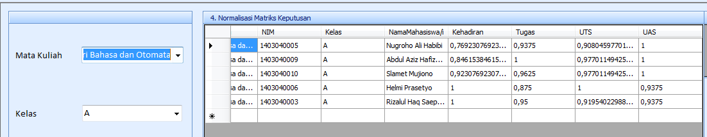
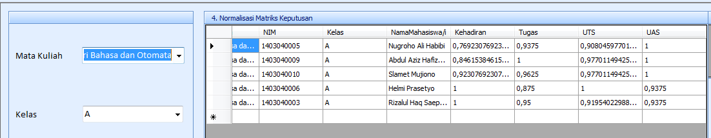

PT. Nawadata Solutions
September 2019 - September 2020
Monitoring dan Merespond Issue aplikasi NAWADATA dari pelanggan di semua media seperti Ticketing system, Email, WA Group.
Memastikan bahwa kendala telah selesai untuk memenuhi SLA yang telah ditetapkan dan melakukan pemeliharaan.
pencegahan untuk setiap aplikasi NAWADATA sehingga kepuasan pelanggan tercapai.
Melakukan Preventive Maintenance Health Check dan Corrective Maintenance.
Mendokumentasikan Issue Aplikasi kedalam Ticketing System & Issue Production Log.
Mempresentasikan Preventive Maintenance Health Check dan Corrective Maintenance.
Berkoordinasi dengan Team Developer dan Team QA Product untuk penyelesaian Issue Production Kategori Bugs.
PT. Kelroul Citra Nusa
Oktober 2017 - Oktober 2019
Menjadi admin web.
Memastikan semua komputer dapat digunakan.
Memastikan semua yang berhubungan dengan networking, infrastructure, hardware dan software berjalan dengan baik.
Melaksanakan tugas lain yang berhubungan dengan IT/Komputer.
Memastikan telephone digunakan oleh user tersebut terhubung ke jaringan dan dapat berkomunikasi seperti seharusnya.
Melakukan pembelian peripheral.
Meminta dan melalukan penawaran harga.
Mensupport kebutuhan umum/General Affair.

 
